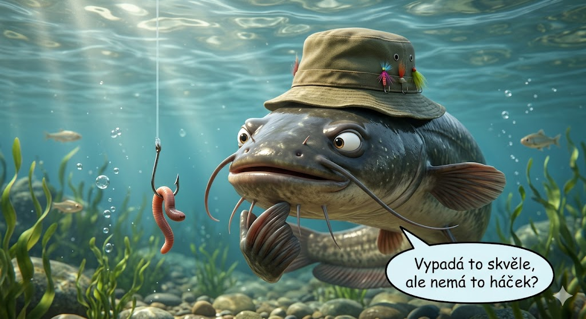

Malé kroky
I pět minut denně stačí. Látku dáváme po soustech, ne jako šedý telefonní seznam.
Pro děti 8–15 let a jejich parťáky
Malý rybář spojuje atlas ryb, krátké testy a praktické návyky u vody. Dítě vidí pokrok, vy máte jistotu, že jde o výuku — ne o sociální síť ani chat s cizími lidmi.

V aplikaci tě čeká spíš dobrodružství než nuda:
Na řece a rybníku vždycky platí pravidla a péče dospělého — aplikace tě na to připraví, nenahradí.
Krátké úseky, jasný cíl — aby příprava nebyla stresem.
I pět minut denně stačí. Látku dáváme po soustech, ne jako šedý telefonní seznam.
Úrovně a série dní motivují — bez soutěže s neznámými lidmi z internetu.
Atlas, úvazy a poznámky z výprav patří k sobě — učení má pokračovat u břehu s rodinou.
Důvěra je základ — tady je, na čem stavíme.
Dítě má konkrétní témata (pravidla, druhy, hájení…), ne nekonečný scroll „něčeho“.
Žádný veřejný profil, žádné psaní s cizími. Obsah míří na průkaz a zodpovědný pohyb u vody.
Čekací listina má jasně popsané účely zpracování. Dokumenty najdete dole na stránce — GDPR a cookies.
Začít zdarma může každý; Premium rozšíří hloubku, až bude aplikace dostupná.
Přesné znění se může do vydání upřesnit — vývoj stále běží.
Primárně pro věk 8–15 let. Mladší děti by měly aplikaci používat s dospělým u zařízení.
Ne. Je to pomůcka k učení a opakování. Praktický výcvik a pravidla revíru vždy řeší dospělý a organizace.
Lidé z čekací listiny budou informováni před veřejným spuštěním. Pořadí záleží na kapacitě testování.
Nech nám e-mail — napíšeme, až bude možné aplikaci stáhnout, a dáme vědět o startovní výhodě na Premium.